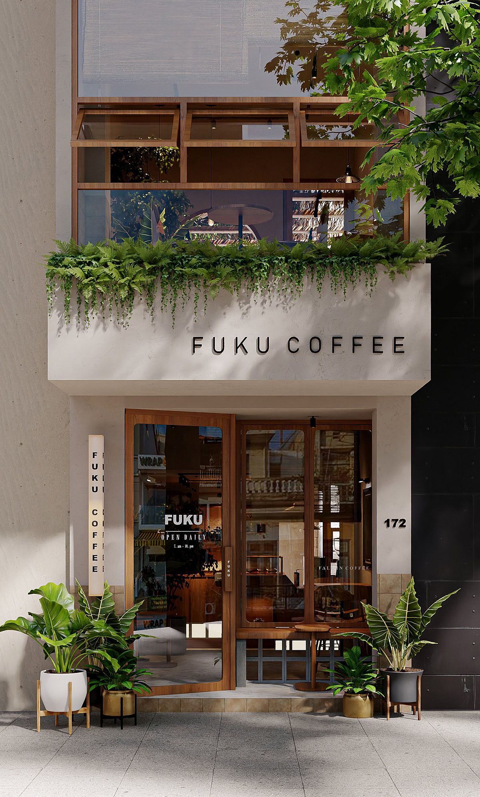
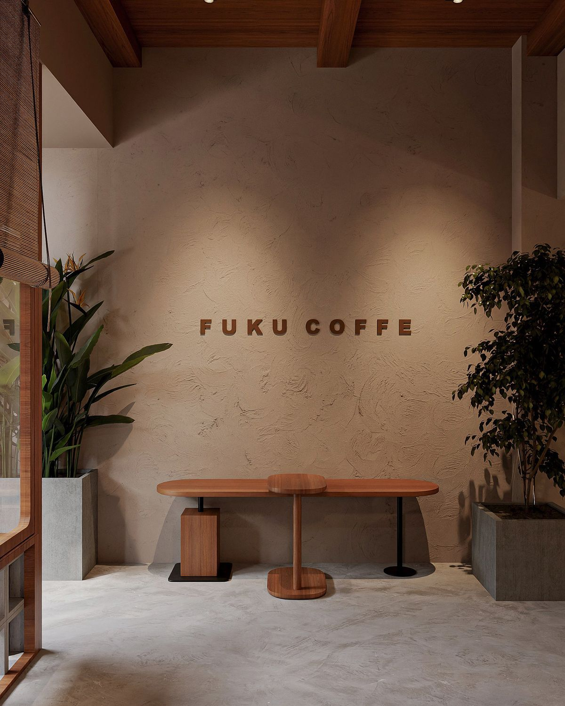
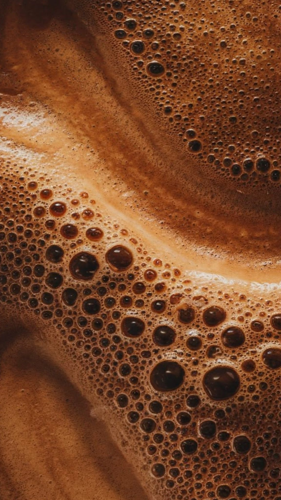
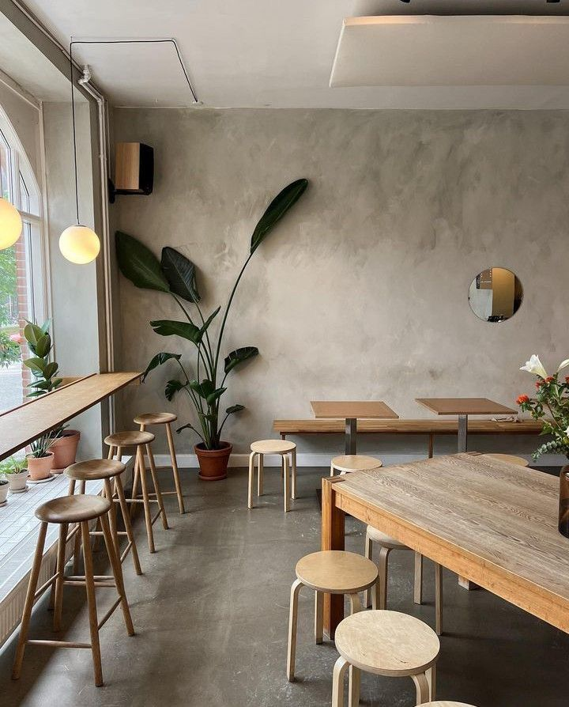

Hulhumalé, Maldives
A small room for coffee, light, and the pace of an unhurried morning.
福 — fuku — means good fortune. We don't promise it. We just try to make the kind of place where it tends to turn up: a cup made with care, a chair by the window, an hour that isn't asking anything of you.

Our Story
Slow coffee, quiet spaces, honest materials.
Fuku was built around three ideas that don't need much explaining. Coffee tastes better when nobody is rushing it. Rooms feel better when they're allowed to be quiet. And plaster, teak and stone age more gracefully than anything that pretends to be them.
Everything else — the beans we buy, the way we brew, the hours we keep — follows from there.
Read our storyFrom the Menu
A few things we're known for.
Mostly classics, made carefully. A short list of Japanese specials for when you want something a little different.
-
Cortado
MVR50Equal parts espresso and steamed milk. Small, warm, and over before you've decided whether to check your phone.
-
Pour-over
MVR55A single origin brewed by hand, one cup at a time. Ask what's on the bar this week.
-
Matcha Latte
MVR70Ceremonial-grade matcha whisked to order, folded into milk. Lightly sweet, softly green.

One cup at a time
一杯ずつ
Visit Us
Come by. Stay a while.
A short walk from the waterfront in Hulhumalé. Window seats fill up early on weekends; the long table in the back is always shared.
- Location
- Hulhumalé, Maldives
- Hours
- Mon – Thu 7:00 AM – 9:00 PM · Fri 2:00 PM – 10:00 PM · Sat – Sun 7:00 AM – 10:00 PM